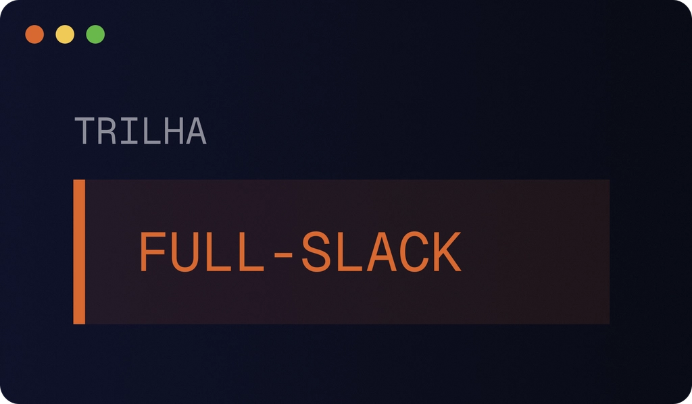
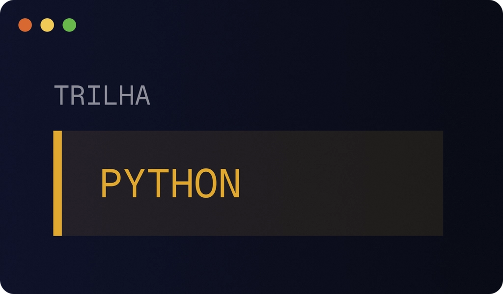
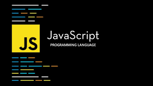
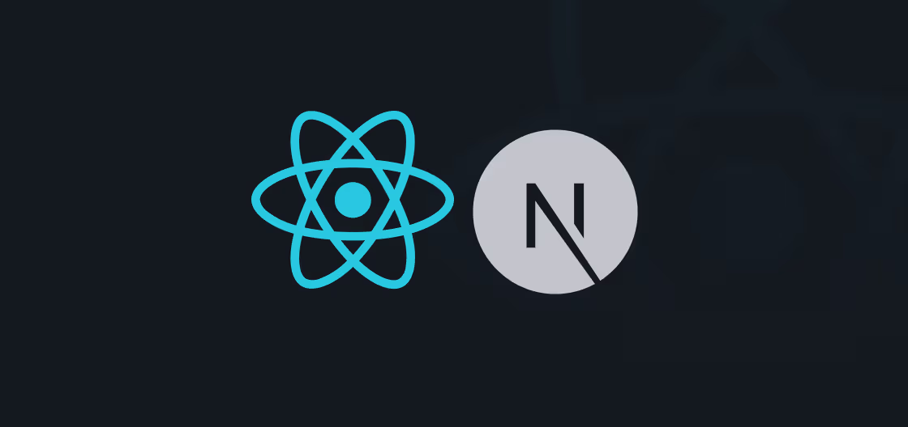
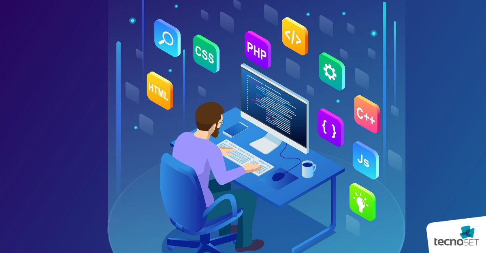

Projetos em Destaque
Explore projetos recentes, ideias inovadoras e soluções criadas com tecnologia.
Trilha iniciante: aprenda a programar com IA

Stack: HTML, CSS, JavaScript
Descrição: Você vai aprender fundamentos de programação enquanto constrói um projeto funcional com HTML, CSS (Tailwind), JavaScript, Gemini API e Cloudinary, passo a passo.
Ver projetoWorkflows agênticos

Stack: React, Next.js, tRPC, Node.js
Descrição: Domine a estruturação de workflows agênticos e o uso de IA em modo agente para decisões arquiteturais e implementação. Crie sub-agents especializados para automatizar partes do desenvolvimento utilizando React, Next.js, tRPC, Node.js, Postgres e Drizzle em uma stack full-stack moderna.
Ver projetoVisão computacional

Stack: Google Antigravity, Python, PyTorch
Descrição: Construa um aplicativo de visão computacional capaz de identificar e rastrear objetos em tempo real pela webcam.Utilizando Google Antigravity, Python, PyTorch, HuggingFace, OpenCV e Streamlit, você aplica IA de ponta em um projeto relevante e prático.
Ver projetoNotícias Tech
Fique por dentro das novidades do mundo da tecnologia, inteligência artificial, desenvolvimento de software e tendências do mercado de TI.
IA generativa continua revolucionando o mercado
Categoria: Inteligência Artificial
Resumo: Ferramentas de IA generativa estão transformando áreas como programação, design e produção de conteúdo, aumentando produtividade e criando novas oportunidades no setor de tecnologia.
Ler notíciaJavaScript segue como a linguagem mais popular

Categoria: Desenvolvimento Web
Resumo: JavaScript continua dominando o desenvolvimento web moderno, com frameworks como React, Next.js e Vue impulsionando aplicações rápidas, escaláveis e interativas.
Ler notíciaNext.js cresce entre desenvolvedores

Categoria: Frameworks
Resumo: O framework Next.js vem ganhando cada vez mais espaço no mercado por oferecer recursos como Server-Side Rendering, otimização automática e excelente performance para aplicações React.
Ler notíciaDemanda por profissionais de TI continua alta

Categoria: Mercado de Tecnologia
Resumo: Empresas continuam buscando desenvolvedores, especialistas em dados e profissionais de segurança digital, reforçando a área de tecnologia como uma das mais promissoras.
Ler notíciaReviews & Análises
Análises de ferramentas, frameworks, bibliotecas e tecnologias usadas no dia a dia do desenvolvedor.
Projeto Web App

Stack: HTML, CSS, JavaScript
Descrição: Aplicação web responsiva focada em performance, usabilidade e boas práticas de desenvolvimento.
Ver projetoAPI REST
Stack: Node.js, Express
Descrição: API RESTful com autenticação, validação de dados e integração com banco de dados.
Ver projetoIntrodução ao Next.js
Stack: React, Next.js
Descrição: Conheça o Next.js, um framework poderoso para React que facilita a criação de aplicações modernas com recursos como Server-Side Rendering, roteamento automático e suporte a aplicações híbridas.
Ver projetoIntrodução ao Next.js
Stack: React, Next.js
Descrição: Conheça o Next.js, um framework poderoso para React que facilita a criação de aplicações modernas com recursos como Server-Side Rendering, roteamento automático e suporte a aplicações híbridas.
Ver projetoSobre o MyTech
O MyTech Hub é um espaço dedicado a compartilhar conhecimento sobre programação, desenvolvimento de software e tecnologia. Nosso objetivo é conectar ideias, projetos e pessoas apaixonadas por código.
Projeto Web App
Stack: HTML, CSS, JavaScript
Descrição: Aplicação web responsiva focada em performance, usabilidade e boas práticas de desenvolvimento.
Ver projeto